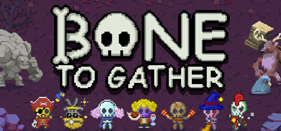
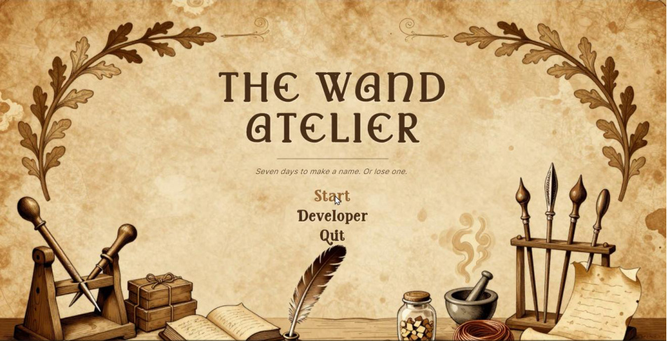
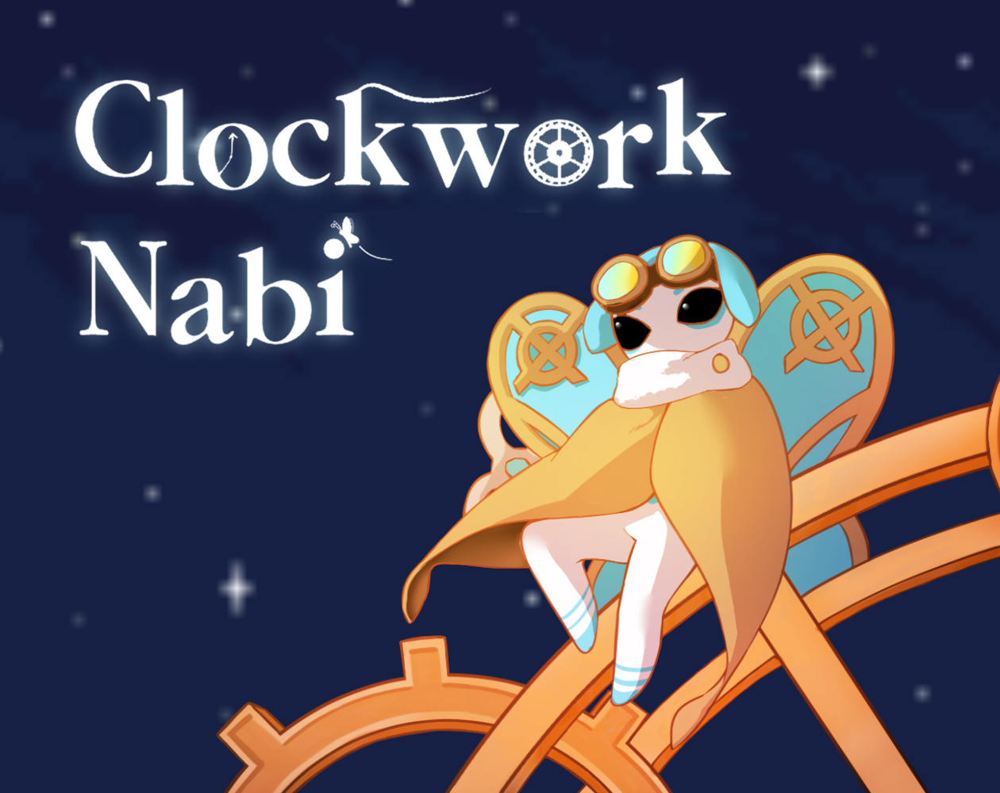
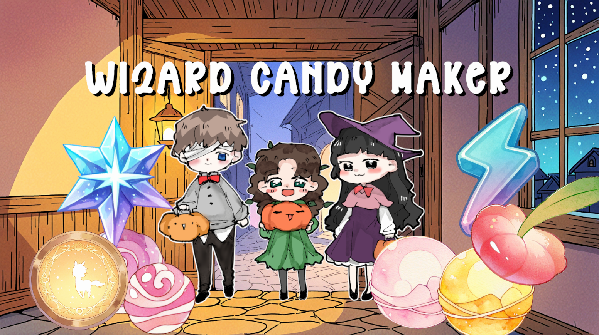

All projects.전체 프로젝트
Games, prototypes, and the ideas behind them. Select a project to explore.게임과 프로토타입, 그리고 그 안에 담긴 생각들. 프로젝트를 선택해 자세히 살펴보세요.

Bone To Gather본 투 게더
Action roguelike · Steam release액션 로그라이크 · Steam 출시

Skulls Pay the Bills해골 꾸며서 먹고 삽니다
3 weeks · Team of 33주 · 3인 팀

The Wand Atelier완드 아틀리에
8 weeks · Solo development8주 · 1인 개발

Clockwork Nabi클락워크 나비
Action · Roguevania액션 · 로그바니아

Wizard Candy Maker마법사 사탕 제작자
Time management · Puzzle시간 관리 · 퍼즐
Mutant Lab뮤턴트 랩
Game design & development게임 기획 및 개발
Classic RTS클래식 RTS
Real-time strategy실시간 전략
Quench퀀치
Game design & development게임 기획 및 개발
Flip Maze플립 메이즈
Puzzle퍼즐